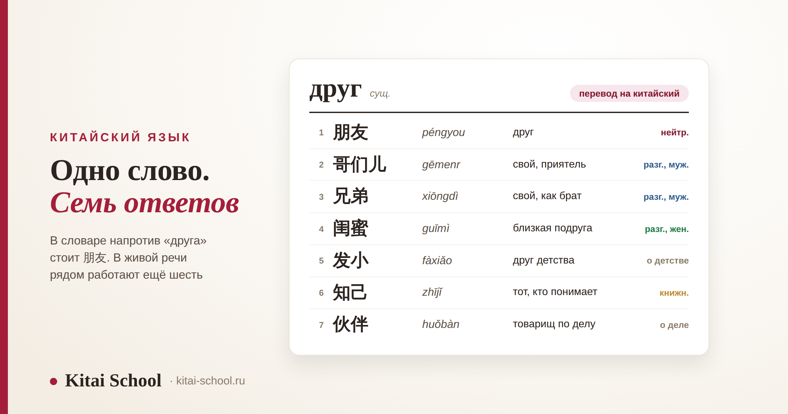
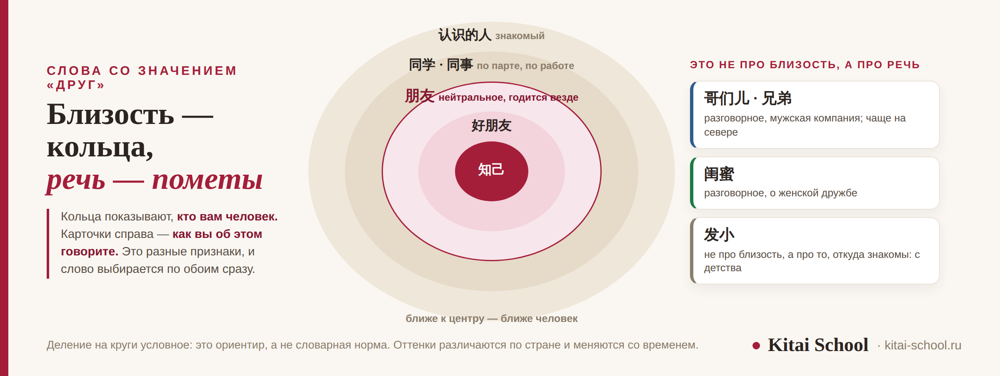

Китайский язык
Друг на китайском: чем 朋友 отличается от 哥们 и 闺蜜


В словаре напротив слова «друг» стоит 朋友 — и это правильный ответ. Но стоит послушать живую речь, и окажется, что рядом работают ещё несколько слов, а китаец выбирает между ними не задумываясь. Выбирает он не по силе симпатии. Слово сообщает две вещи сразу: кто вы друг другу и при ком вы это произносите. Разберём семь слов, покажем, когда к 朋友 добавляют 们, а когда нет, и назовём три ловушки. Сам иероглиф 友 и слова вроде 网友 у нас разобраны отдельно — здесь на них ссылки.
朋友 (péngyou) подходит почти всегда — с него и начинайте. 哥们儿 и 兄弟 — разговорные слова мужской компании, начальнику так не говорят. 闺蜜 — близкая подруга, 发小 — друг детства, 知己 — тот, кто понимает, и слово это книжное. «Друзья» — обычно то же 朋友: 们 добавляют при обращении к группе и никогда не ставят после числительного.
Короткий ответ: 朋友 подходит почти всегда
Если нужно сказать «друг» и нет времени раздумывать, говорите 朋友 (péngyou). Это нейтральное слово: оно уместно с коллегой, с преподавателем, в разговоре о ком-то третьем и при знакомстве. Ошибиться с ним почти невозможно.
Одна деталь про произношение, по которой иностранца слышно сразу. Второй слог в 朋友 произносится слабо, без отчётливого третьего тона: péngyou, а не «пэн-йо́у» с тщательным нырком. Если тянуть второй слог, получается по-книжному — будто вы читаете вслух учебник. Подробнее про такие слоги — в разборе про корректировку произношения.
А дальше начинается то, ради чего эта статья. Вот слова, которые живут вокруг 朋友.
| Слово | Чтение | Когда говорят |
|---|---|---|
| 朋友 | péngyou | нейтральное, уместно почти везде |
| 哥们儿 | gēmenr | свои, мужская компания; разговорное, чаще на севере |
| 兄弟 | xiōngdì | буквально «братья»; о близком друге, тоже мужская речь |
| 闺蜜 | guīmì | близкая подруга; слово о женской дружбе |
| 发小 | fàxiǎo | друг детства, с кем росли рядом |
| 知己 | zhījǐ | тот, кто понимает; слово книжное и сильное |
| 伙伴 | huǒbàn | товарищ по общему делу, партнёр |
Сразу оговорка: список не закрытый. В живой речи есть и другие слова, мы взяли те, которые встречаются чаще всего и которые вы точно услышите. И ещё два, без которых картина неполная: 好朋友 (hǎo péngyou) — «близкий друг», где близость добавляет само 好, и 同学 (tóngxué) — одноклассник или однокурсник. Второе слово в Китае значит больше, чем у нас: связь по общей парте держится годами, и бывшего однокурсника называют 同学 и через двадцать лет.
Если вы только начали и вам нужен минимум: 朋友 входит в самую первую лексику, его учат на старте. Какие ещё слова в этот минимум входят, видно по разбору про HSK 1.
Круги близости: кто кому кто
Русский читает этот список как лестницу: приятель, друг, близкий друг, лучший друг. И начинает искать, какое китайское слово на какой ступеньке стоит. Так не получается, и вот почему.
Слова различаются сразу по двум признакам, а не по одному. Первый — близость: кто вам этот человек. Второй — речь: как вы говорите и кто вас слышит. И эти два признака не совпадают. 哥们儿 не «ближе», чем 好朋友; он просто из другой речи — из свойской, мужской, неофициальной. А 知己 не «ещё ближе», чем 发小; оно из книжной речи, и в обычном разговоре звучит приподнято.
Отсюда правило, которое снимает большую часть ошибок. Ошибаются не в выборе неправильного слова, а в количестве сказанного. Можно сказать слишком много — назвать преподавателя 哥们儿. Можно сказать слишком мало — представить близкую подругу нейтральным 朋友 там, где от вас ждали 闺蜜. И то и другое заметят, хотя поправлять вас, скорее всего, не станут: прямо указывать на чужую оплошность здесь не принято, об этом мы писали в статье про то, как общаются китайцы.
И вещь, которую стоит принять сразу, иначе она будет мешать. Китайское 朋友 легче русского «друга». У нас это слово тяжёлое: друзей у человека трое, и это не про знакомых. В Китае 朋友 называют и того, с кем вчера ужинали. Никакой неискренности в этом нет — просто слово занимает другое место в языке.

闺蜜, 发小 и 知己: когда нужно сказать больше
Эти три слова объединяет одно: каждое из них добавляет к «другу» конкретную подробность. Не силу чувства, а обстоятельство.
闺蜜 (guīmì) — близкая подруга. Слово современное и очень ходовое; возводят его к обороту 闺中密友 — «близкая подруга во внутренних покоях», то есть та, с кем делятся тем, чего не говорят при других. Важно, что 闺蜜 — именно про женскую дружбу, и мужского слова ровно с таким же оттенком в языке нет: разговорные 哥们儿 и 兄弟, о которых речь ниже, звучат по-другому — они про компанию, а не про доверие один на один.
发小 (fàxiǎo) — друг детства, тот, с кем росли рядом. Слово говорит не о том, насколько вы близки сейчас, а о том, откуда вы знакомы. Можно годами не видеться и всё равно называть человека 发小: обстоятельство никуда не делось. Разговорное, чаще северное.
知己 (zhījǐ) — буквально «тот, кто знает меня». Это самое сильное слово в списке и одновременно самое книжное: в обычном разговоре оно звучит приподнято, зато обычно в письменной речи, в песнях и в рассуждениях о дружбе. Сказать «мы с ним 知己» — заявление серьёзное, и бросаться им не стоит. В классической литературе эта тема разобрана вдоль и поперёк, и часть устойчивых оборотов о дружбе живёт до сих пор — про такие выражения у нас есть отдельный разбор про идиомы китайского языка.
Студентка рассказывала китайской знакомой про свою лучшую подругу и сказала 我的朋友. Собеседница кивнула и спросила: а близкая? Пришлось объяснять, что да, самая близкая, знакомы с первого класса.
Мы потом разобрали эту фразу на занятии. Вышло, что одним словом 闺蜜 она сказала бы всё: и что подруга, и что близкая, и что речь о женской дружбе. А 发小 добавило бы, откуда знакомы.
Студентка сначала расстроилась: получается, её поняли неправильно. Нет, поняли правильно — просто не до конца. 朋友 не ошибка, оно сработало. Оно просто оставило половину картины за кадром, и собеседница честно переспросила.
哥们儿 и 兄弟: слова мужской компании
Оба слова означают примерно «свой, близкий приятель», оба звучат тепло и оба живут в разговорной речи. Разница между ними тонкая, а вот граница с 朋友 — заметная.
哥们儿 (gēmenr) собрано из 哥 «старший брат» и суффикса, а на конце у него эризация — то самое 儿, которое произносится как призвук. Слово разговорное и чаще северное: в Пекине его слышно постоянно. Это тенденция, а не граница на карте — на юге его тоже понимают и употребляют, просто реже.
兄弟 (xiōngdì) буквально значит «братья». В переносном смысле так называют человека, с которым вас связывает что-то большее, чем просто знакомство: вместе работали, вместе служили, вместе через что-то прошли. Звучит чуть теплее и серьёзнее, чем 哥们儿.
| Ситуация | 哥们儿 / 兄弟 | Что сказать вместо |
|---|---|---|
| Приятель на футболе, сосед по общежитию | нормально | — |
| Коллега, с которым вы на равных и давно | обычно нормально | — |
| Начальник, преподаватель, человек старше | нет | 朋友 или обращение по должности |
| Незнакомый человек в официальной обстановке | нет | 朋友 |
| Женщина о своей подруге | не то слово | 闺蜜 или 好朋友 |
Третья строка — та, на которой чаще всего ошибается иностранец. Вы выучили живое разговорное слово, вам хочется его применить, и вы говорите его преподавателю. Реакция будет вежливой, но дистанцию вы сократили за него, а не вместе с ним, — а в китайском общении её обычно обозначает старший. Как это устроено, подробно разобрано в статье про китайский этикет общения.
Есть и совсем разговорный край. 老铁 (lǎotiě) — «кореш», слово из интернета и с северо-востока, в последние годы очень заметное. В речи иностранца оно звучит как цитата, а не как своё, и в первый год я бы его не трогала. Такие слова и то, как быстро они устаревают, — в разборе про китайский интернет-сленг.
Как сказать «друзья»: когда нужно 们, а когда нет
Вопрос задают почти все, и ответ неочевидный. В китайском существительное обычно не меняется по числу: одно и то же 朋友 стоит и там, где по-русски «друг», и там, где «друзья». Различает контекст.
При этом суффикс 们 существует и работает. Он присоединяется к словам со значением лица и показывает множественность, но ставят его далеко не всегда. Разберём по случаям.
| Что сказать | Как правильно | Почему |
|---|---|---|
| У меня много друзей | 我有很多朋友 | множественность уже выражена словом «много» |
| Три друга | 三个朋友 | после числительного 们 не ставят никогда |
| Друзья! (обращение к залу) | 朋友们 | обращение к группе — главный случай для 们 |
| Ребята, слушайте (учитель классу) | 同学们 | то же самое: обращение к группе людей |
| Все, идёмте | 大家 | отдельное слово «все», 们 не нужно |
Из этой таблицы стоит запомнить два правила, которые закрывают почти все случаи. Первое: если рядом стоит число, 们 не ставится — это жёсткое правило, а не предпочтение. Второе: 们 чаще всего появляется в обращении, когда вы говорите группе людей. Во всех остальных случаях спокойно обходитесь обычной формой.
И слово, которое пригодится чаще, чем кажется. 大家 (dàjiā) — «все, ребята, народ». Им обращаются к компании, к классу, к чату. Оно короче и естественнее, чем 朋友们, которое в бытовой речи звучит слегка торжественно.
Три ловушки, из-за которых фраза меняет смысл
Все три встречаются регулярно, и все три легко обойти, если знать заранее.
Первая: 男朋友 и 女朋友. Это не «друг мужского пола» и не «подруга», а молодой человек и девушка в романтическом смысле. Чтобы сказать «мой друг» про мужчину, говорите просто 我朋友 или 我的一个朋友 — без 男. Ошибка безобидная, но объясняться потом долго; подробнее она разобрана в разборе иероглифа 友.
Вторая: 爱人 (àiren). Слово выглядит как «любимый человек», и иностранцы иногда употребляют его в значении «возлюбленный». В материковом Китае 爱人 — это супруг или супруга, слово нейтральное и семейное. За пределами материка его понимают иначе, поэтому мы не выдаём материковое употребление за общее правило. А человека, с которым встречаются, называют 对象 (duìxiàng) — с оттенком «всё серьёзно».
Третья: разговорное слово не по адресу. Про неё мы уже говорили, но повторим, потому что она самая частая: 哥们儿, 兄弟 и 老铁 в разговоре со старшим, с преподавателем или с начальником звучат панибратски. Нейтральное 朋友 не подведёт нигде.
Сюда же примыкает общая привычка, которая полезнее любого списка. Слушайте, каким словом вас называет собеседник, и отвечайте тем же уровнем. Если он говорит 朋友 — говорите 朋友. Если перешёл на 哥们儿 — можно и вам. Так вы не промахнётесь ни разу. Тот же приём работает в приветствиях и прощаниях: разбор есть в статьях про то, что отвечать на 你好, и про то, как попрощаться на китайском.
Что мы здесь не пересказываем
Эта статья про выбор слова. Всё, что касается письма и состава знаков, разобрано отдельно и подробнее.
| Ваш вопрос | Где разобрано |
|---|---|
| Как устроен иероглиф 友 и как его писать | дружба по-китайски и иероглиф 友 |
| Слова 友谊, 网友, 校友 и схема X + 友 | дружба по-китайски и иероглиф 友 |
| Обращения к старшим, титулы, «лицо» | китайский этикет общения |
| Почему китайцы не отказывают прямо | как общаются китайцы |
| Слова из интернета и как быстро они устаревают | китайский интернет-сленг |
| Слабые слоги и тоны в потоке речи | корректировка произношения |
И главное, ради чего всё это собиралось. Начинать надо с 朋友 и не бояться, что этого мало. Остальные слова добавляют подробность, а не вежливость: они говорят, откуда вы знакомы и в какой вы компании. Появятся они у вас сами, из разговоров, — а пока их нет, нейтральное слово работает везде и никого не задевает.
Частые вопросы (FAQ)
Как будет «друг» на китайском?
朋友 (péngyou). Это нейтральное слово, и оно подходит почти в любой ситуации: так называют и близкого человека, и коллегу, и того, с кем познакомились вчера. Второй слог произносится слабо, без отчётливого третьего тона. Если хотите показать близость, говорят 好朋友 (hǎo péngyou) — «близкий друг».
Как сказать «друзья» на китайском?
Чаще всего тем же словом: 朋友 в китайском не меняется по числу, и во фразе «у меня много друзей» оно стоит в обычной форме. Суффикс 们 добавляют, когда обращаются к группе: 朋友们 (péngyoumen) — «друзья!». А вот после числительного 们 не ставят никогда: правильно 三个朋友 (sān ge péngyou), «три друга».
Чем 哥们儿 отличается от 朋友?
Не близостью, а речью. 朋友 нейтрально и уместно везде. 哥们儿 (gēmenr) — разговорное слово мужской компании, чаще северное, и оно сразу задаёт свойский тон. Сказать так приятелю на футболе нормально, а начальнику или преподавателю — нет: это звучит панибратски.
Как назвать близкую подругу по-китайски?
闺蜜 (guīmì) — именно близкая подруга, слово о женской дружбе. Оно современное и очень употребительное. Есть и нейтральный вариант: 好朋友 подойдёт всегда. А если вы дружите с детства, точнее будет 发小 (fàxiǎo) — друг детства, тот, с кем росли рядом.
Можно ли назвать 朋友 человека, с которым познакомились вчера?
Да, и это нормально. Китайское 朋友 легче русского «друга»: им называют широкий круг людей, а не только самых близких. Фраза 交个朋友吧 при знакомстве звучит обычно. Если нужно показать, что человек действительно близкий, добавляют 好 или выбирают другое слово.
Правда ли, что 男朋友 — это не «друг-мужчина»?
Правда. 男朋友 (nán péngyou) — молодой человек, партнёр, а 女朋友 (nǚ péngyou) — девушка в том же смысле. Чтобы сказать «мой друг» про мужчину, говорите просто 我朋友 или 我的一个朋友, без 男. Ошибка безобидная, но объясняться потом приходится долго.
Хотите различать такие оттенки на слух, а не по таблице? На диагностическом занятии посмотрим ваш уровень и подберём формат. Оставить заявку или написать в Telegram.
Дальше по теме: иероглиф 友 и слова с ним — дружба по-китайски и иероглиф 友; этикет и обращения — китайский этикет общения; непрямая речь — как общаются китайцы; слова из сети — китайский интернет-сленг; приветствия — что отвечать на 你好; прощания — как попрощаться на китайском; произношение слабых слогов — корректировка произношения; устойчивые выражения — идиомы китайского языка; базовая лексика — HSK 1; живая речь на занятиях — курс по разговорной речи.
Источники
- Значения слов сверены по современным толковым и переводным словарям китайского языка.
- Практика Kitai School — что студенты говорят на занятиях и где их поправляют китайские собеседники.
- Типичная картина, а не строгое правило: оттенки регистра и региональные предпочтения различаются по стране и меняются со временем. Деление на круги близости — ориентир, а не словарная норма.
Пусть говорится легко! 交个朋友吧！